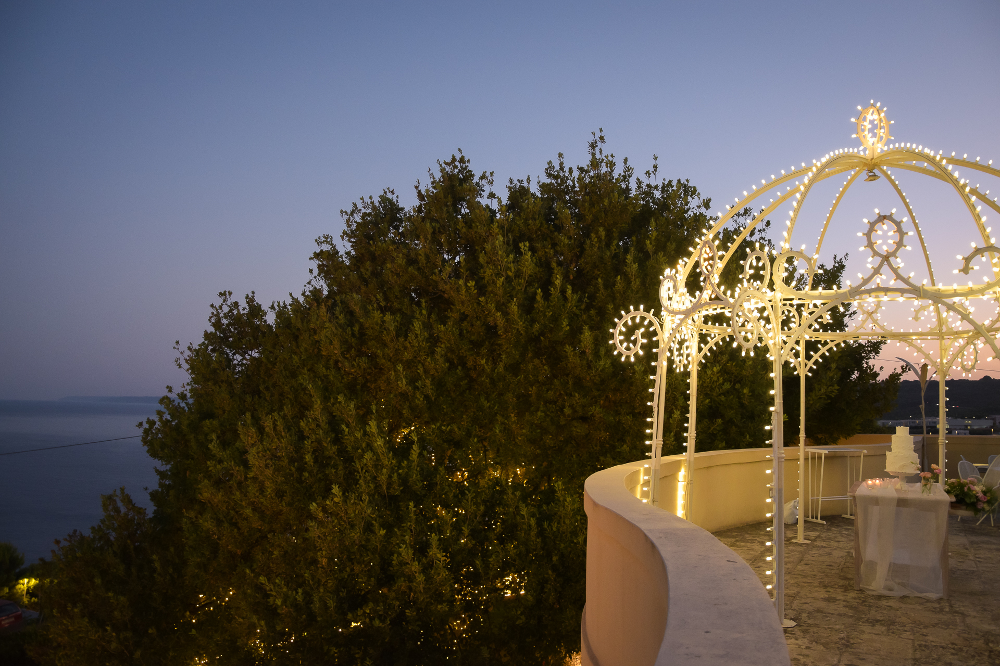
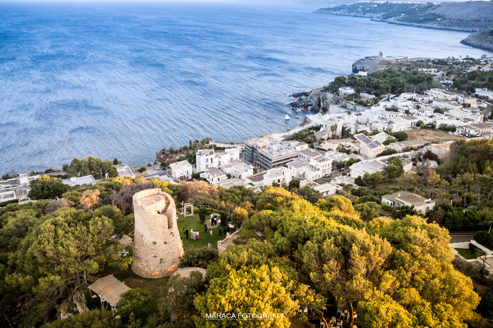

C'è un momento in cui la realtà supera persino i sogni più belli. Questo è quello che ha vissuto Carlo e Sabrina quando hanno scelto Cala dei Balcani per il giorno più importante della loro vita — un matrimonio che ha conquistato anche il pubblico del programma televisivo francese 4 Mariages pour une lune de miel (4 Matrimoni per una luna di miele).
Un Giorno Speciale: 14 Settembre al Tramonto
La cerimonia civile si è tenuta il 14 settembre, in una delle ore più magiche della giornata: il tramonto sul mare Adriatico. La luce dorata che riflette sull'acqua, il profumo del Salento nell'aria, gli ospiti commossi — tutto ha contribuito a creare un'atmosfera di bellezza autentica e irripetibile.
Il concetto scelto dalla coppia era quello dell'«Italian Chic»: un equilibrio perfetto tra l'eleganza della tradizione italiana e la spontaneità del Salento, con i suoi colori, i suoi sapori e la sua luce unica.
La Serata, Momento per Momento
Un'Ospitalità a 360°
Quello che ha reso il matrimonio di Carlo e Sabrina davvero speciale non è stato solo il luogo, ma la cura con cui ogni momento è stato pensato e orchestrato. Ogni dettaglio — dall'illuminazione agli allestimenti, dalla musica ai fiori — rispecchiava il carattere della coppia e il calore dell'ospitalità salentina.
Il programma televisivo francese ha riconosciuto in questa celebrazione qualcosa di straordinario: non solo un bel matrimonio, ma un'esperienza totale che racchiude l'essenza del meglio che il Salento può offrire.
La Vostra Storia Può Iniziare Qui
Ogni coppia merita una storia unica. A Cala dei Balcani lavoriamo per fare in modo che il vostro matrimonio sia esattamente questo: irripetibile, autentico, e indimenticabile per voi e per tutti i vostri ospiti.
Volete scrivere la vostra storia d'amore a Cala dei Balcani?
Contattateci per scoprire le date disponibili e iniziare a pianificare il matrimonio dei vostri sogni.

